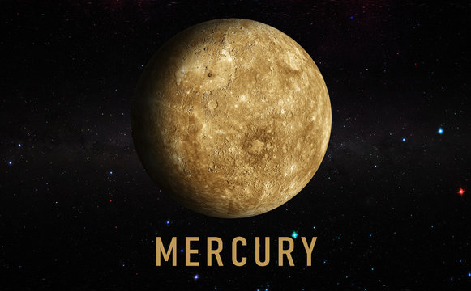

Mercury is the smallest planet in our solar system and the closest to the Sun. It has extreme temperature variations, no moons, and a thin atmosphere, making it a fascinating but harsh world.
📌 Key Facts
- Distance from Sun: 46-70 million km (depending on orbit)
- Rotation day: 59 Earth days
- Orbital period(Year): 88 Earth days
- Orbital Speed: 47 km/s (fastest of all planets)
- Atmosphere:Extremely thin (exospphere)
🌡️ Unique Features
Mercury experiences very hot days and extremely cold nights due to lack of atmosphere.No moons, no rings. It has a very weak magnetic field(about 1% of the earth's),generated by it's partially molten iron core, it helps deflect some solar wind but is not strong enough to protect the planet fully.